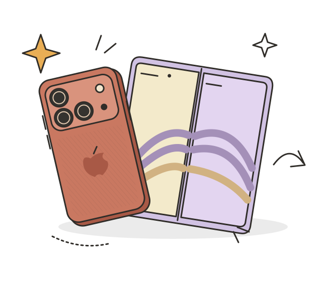

UN RINCÓN PARA LA GENTE CURIOSAIdeas fuera
Ideas fuera
del margen.✳
Tecnología, videojuegos y otras cosas que
no podía dejar de compartir.
Internet es más bonito
con un poco de curiosidad.HECHO CON CURIOSIDAD
DESDE 2026
con un poco de curiosidad.HECHO CON CURIOSIDAD
DESDE 2026
RECIÉN SALIDO DEL HORNO ESPECIAL APPLE · 2026El futuro tiene
El futuro tiene
más de una
forma de abrirse.
iPhone 18 Pro, Pro Max y el nuevo iPhone Duo.
Todo lo que dejó la presentación, en un solo lugar.

un nuevo capítulo ↗APPLEen el margenIlustración conceptual de Fluffy
APUNTA LAS FECHAS
Misma fecha, mismo contador.Lo bueno está por llegar ↴
Calendario anunciado por Apple. Contadores hasta las 00:00 de cada fecha, hora de Ciudad de México (UTC−6); no indican la hora de apertura de tiendas. La disponibilidad puede variar por región.
PÁGINAS DEL CUADERNO
Algo nuevo que descubrir.
No encontré esa entrada. Prueba con otra palabra.

LA PERSONA DETRÁS DE LOS GARABATOS
Hola, soy Fluffy.
Este es mi pequeño rincón de internet. Un lugar para hablar de juegos, descubrir tecnología y guardar esas ideas que no caben en una nota del teléfono.
Pasa, lee y quédate un ratito. ↗